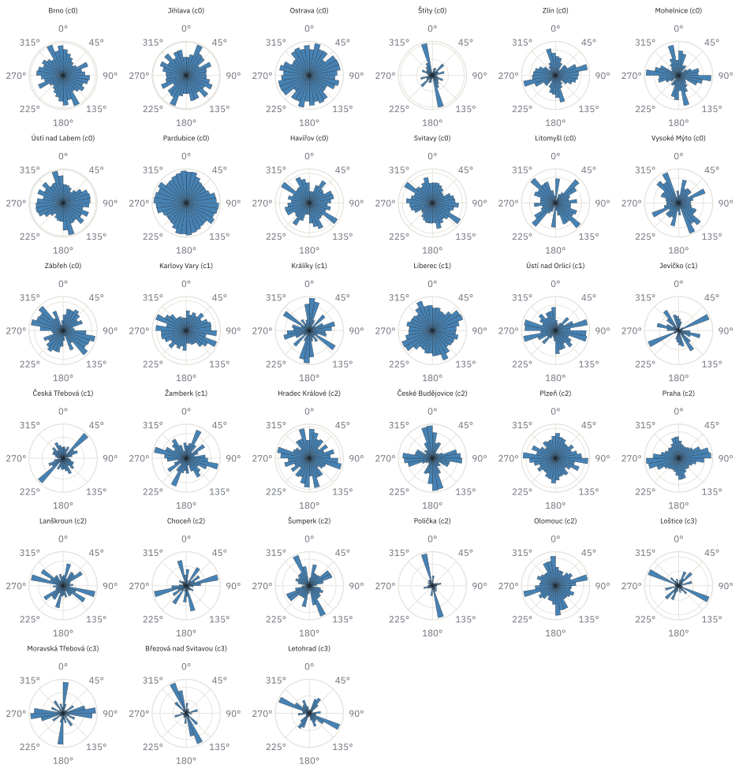

Projekt · první díl
Doprava a rovně! Orientace ulic českých měst
Orientace a topologie uličních sítí 33 českých měst a obcí, inspirováno posterem Geoffa Boeinga
vytvořeno 11. 9. 2026 · aktualizováno 14. 9. 2026
Některá města mají ulice narovnané do pravidelné mřížky, jinde se klikatí, jak se kdysi vinula dopravní cesta či řeka. Dá se tenhle rozdíl změřit — ne jen "od oka", ale číslem? A dá se na základě takových čísel poznat, že si jsou dvě česká města morfologicky podobná, i když leží na opačných koncích republiky?
Přímou inspirací je poster k přednášce na FA ČVUT Geoffa Boeinga "Universal Patterns in Urban Street Networks", který obdobně srovnával velká světová města. Tohle je první díl pokusu pro česká sídla.
co je orientace ulic
Každý úsek ulice má svůj azimut, tj. kterým směrem míří vzhledem k severu. Když si azimuty všech ulic ve městě spočítáme a vyneseme do kruhového histogramu (tzv. polar/rose graf), vznikne obrazec, který napoví, jak jsou ulice orientované. Pravidelná mřížka dá pár ostrých výběžků (typicky sever-jih a východ-západ), organicky rostlé město dá spíše graf rozmazaný a nepravidelný nebo se například blíží ke kruhovitému tvaru.
Míra téhle nepravidelnosti se dá vyjádřit jedním číslem — orientační entropií (Shannonova entropie přes rozdělení azimutů). Nízká entropie říká, že ulice směřují jen do pár směrů (grid). Vysokou entropii naopak interpretujem tak, že směry jsou rozptýlené skoro rovnoměrně (organický půdorys).
jak jsme to spočítali
Uliční sítě se stahují přes OSMnx (autorem je Geoff Boeing) nad daty OpenStreetMap jako grafy v NetworkX — pro každé sídlo `network_type="drive"` (síť pro auta). Kromě orientační entropie se pro každé město počítá i pár topologických metrik: průměrná okružnost cesty (circuity), hustota křižovatek a průměrný počet ulic na uzel.
Vzorek zatím tvoří 33 sídel složených ze všech 13 krajských měst + Praha, a menší regionální shluk měst a městeček na pomezí Pardubického a Olomouckého kraje (Šumpersko, Svitavsko, Ústeckoorlicko), plus Havířov jako příklad plánovaného socialistického sídliště. Je to malý zlomek z 6 259 obcí ČR — cílem první fáze bylo hlavně ověřit, že celý postup (stažení sítě → metriky → vizualizace) funguje.
poster — 33 měst vedle sebe
Výstupem je zatím následující obrázek. Jeden polar graf orientace na město, seřazené podle výsledku shlukování (viz níže). Větší krajská města mají typicky hustší, pravidelnější růžice; menší městečka na Šumpersku a Svitavsku často jeden až dva ostré, dominantní směry — pravděpodobně stopa jedné historické hlavní ulice/cesty, kolem které město vyrostlo.

Orientace uliční sítě (délkově vážený, symetrizovaný histogram azimutů) pro 33 českých sídel, seřazeno podle shluků (c0–c3, viz níže).
shlukování — hledání morfologických typů
Zkusil jsem sídla na základě těchto metrik i automaticky seskupit (K-Means nad standardizovanými metrikami, počet shluků k zvolen podle silhouette skóre). Vyšly 4 skupiny, Silhouette skóre finálního shlukování je ale jen 0,195, což je slabé až sporné oddělení, ne přesvědčivý důkaz čtyř jasně odlišných morfologických typů. Jeden ze čtyř shluků navíc tvoří jediné město (Jevíčko) — to bychom označli spíš jako odlehlou hodnotu než coby plnohodnotnou kategorii.
Shluky je zatím nutno považovat jako proof-of-concept, ne jako hotový závěr o typologii českých měst.
co z toho (zatím) plyne
- Orientace ulic se dá smysluplně změřit a vizuálně i číselně srovnat mezi městy — technický postup funguje.
- Automatické shlukování na tomhle vzorku a s touhle sadou metrik dává jen slabě oddělené skupiny (silhouette 0,195) — čtyři shluky nutno brát jako orientační, ne jako prokázanou typologii.
- Vzorek (33 sídel) je zatím malý a nenáhodný — vybraný ručně tak, aby obsahoval kontrastní případy, ne jako reprezentativní výběr ČR.
limity a co bude dál
- Vzorek plánuji rozšířit na všechny obce s mětským statutem.
- `network_type="drive"` u malých obcí (např. Loštice, Štíty) dává řidší síť než u velkých měst — může to metriky menších sídel mírně zkreslovat. Zkoušel jsem i `"all"` (všechny typy cest), ale u velkých měst (Brno) opakovaně selhávalo stahování přes veřejný Overpass server.
- Binning azimutového histogramu (počet výsečí v polar grafu) je zatím na jedné zafixované hodnotě — ještě jsem nesrovnal, jak moc mění čitelnost posteru.
Výzkumné otázky, na které má projekt odpovědět:
- RQ1 (deskriptivní): mají historická jádra a plánovaná (průmyslová/socialistická sídla) rozpoznatelně odlišné polar histogramy orientace ulic?
- RQ2 (klasifikační): dá se na základě síťových a prostorových metrik (orientační entropie, hustota křižovatek, průměrný stupeň uzlu, podíl čtyřcestných křižovatek) sídla smysluplně shlukovat do morfologických typů?
- RQ3 (explorativní): odpovídají takové shluky nějakému geografickému nebo historickému vzorci (Čechy vs. Morava, velikost obce, kraj), nebo je morfologický typ na geografii nezávislý?
podobné projekty a inspirace
- hlavní inspiraceBoeing, G. (2019). Urban spatial order: street network orientation, configuration, and entropy. Applied Network Science, 4(1), 67. — stejná metoda (orientační entropie, polar grafy), aplikovaná na stovku měst světa.
- nástrojBoeing, G. (2017). OSMnx: New methods for acquiring, constructing, analyzing, and visualizing complex street networks. Computers, Environment and Urban Systems, 65, 126–139. — knihovna, na které je tenhle projekt postavený.
kód a data
- repogithub.com/Dobes-Michal-Tobias/UrbanMorphology
- Data: OpenStreetMap (přes OSMnx), ČSÚ, RÚIAN.